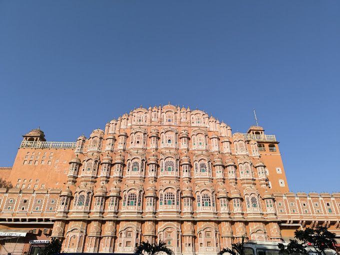

Important: Jaipur is a beautiful city in Rajasthan, India.
History: It is famous for its rich history and magnificent palaces.
Jaipur is also known as the Pink City.
It is a wonderful place to visit!
It was founded in 1727.
Jaipur is the capital of Rajasthan and one of India's most
popular tourist destinations. It is known for its beautiful
forts, colorful markets, traditional culture, and delicious food.
The city is part of India's famous Golden Triangle tourist route.

Location: Rajasthan, India
Best Time to Visit: October to March
Famous For: Forts, palaces, culture, and handicrafts
Nickname: The Pink City
To learn more about Jaipur, visit the official Rajasthan tourism website: Explore Jaipur
Jaipur is a wonderful destination for history and culture lovers!